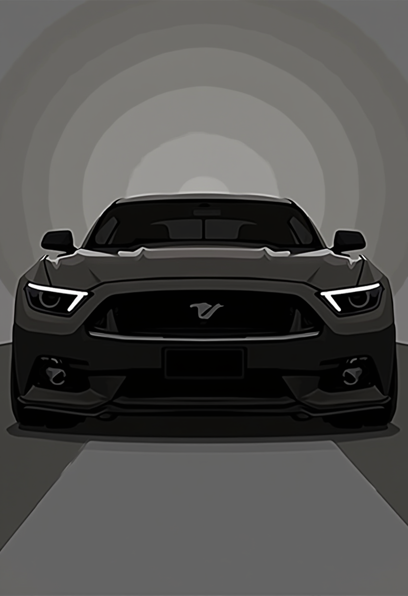

Samochód
Samochód zapewnia niezależność i wygodę podróżowania. Dzięki niemu
możemy poruszać się szybko i sprawnie, docierając do dowolnego miejsca
o dowolnej porze. To również praktyczne rozwiązanie dla rodzin z
dziećmi czy osób, które transportują duże przedmioty.

Komunikacja
Komunikacja miejska to wygodny i ekologiczny sposób poruszania się po
mieście. Dzięki niej unikniesz korków, poszukiwania parkingu i
związanych z tym stresów. Regularne korzystanie z transportu
publicznego jest również korzystne dla portfela i środowiska.